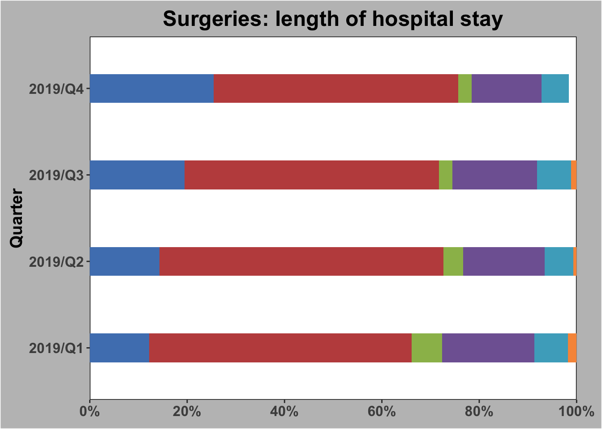
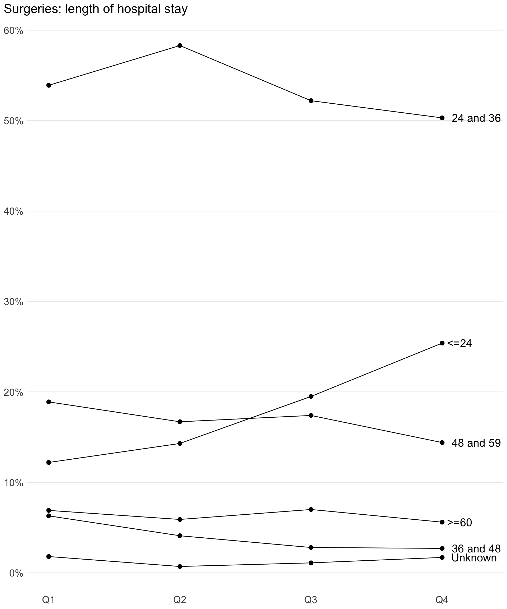
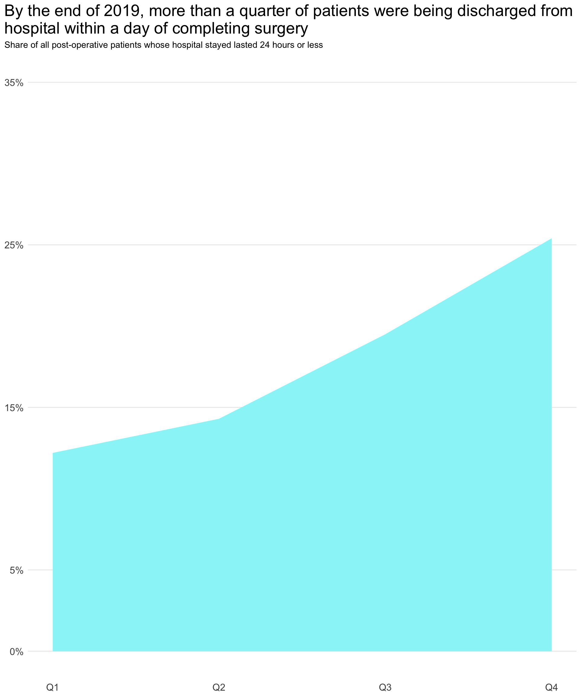
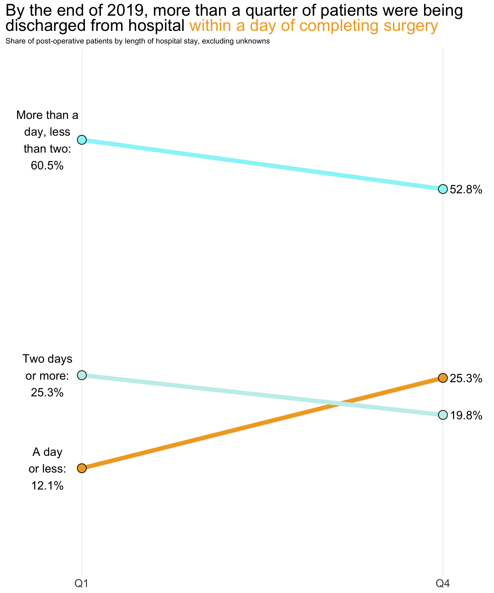

hosital_stay_reshaped <- hospital_stay |> tidyr::pivot_longer(col =-Quarter) |>mutate(name =factor( name,levels =c("<=24", "24 and 36", "36 and 48", "48 and 59", ">=60", "Unknown") ),position = stringr::str_sub(Quarter, -1) |>as.double(),emphasis =if_else(name =="<=24", TRUE, FALSE),tooltip =paste0(Quarter, ": ", scales::label_percent(accuracy=1)(value)) ) fill_values <-c("<=24"="#4F81BD","24 and 36"="#C04F4D","36 and 48"="#9BBB59","48 and 59"="#8064A2",">=60"="#4BACC6","Unknown"="#F79646" )original <-ggplot(data = hosital_stay_reshaped,aes(x = Quarter, y = value, fill = forcats::fct_rev(name)) ) +geom_bar(position ="stack", stat ="identity", width =1/3) +coord_flip() +scale_fill_manual(values = fill_values) +scale_y_continuous(labels = scales::percent,limits =c(0,1),breaks =c(0, .2, .4, .6, .8, 1.0),expand =c(0,0) ) +theme(legend.position ="none",plot.title =element_text(hjust =0.5, face ="bold", size =18),panel.grid =element_blank(),panel.background =element_rect(fill ="white", colour ="black"),plot.background =element_rect(fill ="#BFBFBF"),plot.margin =margin(0.3,0.75,0.3,0.3,"cm"),axis.title.x =element_blank(),axis.text =element_text(size=12, face ="bold"),axis.title.y =element_text(size=14, face ="bold") ) +labs(title ="Surgeries: length of hospital stay" )original

Making assumptions
When I look at this chart, before I even get into the specifics I first have two key questions:
Who is the audience for this graph?
What is the point of this graph?
Now, we have to make assumptions about the audience for the purpose of this exercise: so let’s assume this is designed to inform the executive leadership team at a hospital.
Ok, but what are we trying to tell them using this graph? Well, the data appears to be telling a success story: between Q1 and Q4 in 2019 the proportion of patients who stayed more than 24 hours in hospital after surgery decreased.
Notice that I’m making further assumptions here: I assume that the categories are measuring hours, and I assume that what’s being measured is length of stay in hospital after surgery. In the absence of other evidence, these seem like reasonable assumptions to make.
Making it better
To quote from the Storytelling With Data website:
Imagine the person who created this visual asks you for your opinion. What feedback might you provide to improve its effectiveness? Consider not only what you would change, but also why. What is the benefit of incorporating your points of critique?
So we have an assumed audience (ELT at the hospital), and we have a narrative (in 2019 there was a quarter-on-quarter decline in post-surgery lengths of stay at the hospital). How can we improve the existing visual to communicate this point effectively to our assumed audience?
Title
Let’s start at the top: with the title of the chart. There are two things that we can improve here: the position and content of that title.
What’s wrong with the position? Well, many cultures around the world read from left to right, and that’s certainly true in the English-speaking world. Storytelling With Data’s very own Cole Knaflic has written about the need to left-align graph titles, and research elsewhere backs this up: put your titles on the top left, as that’s where your audience will look first.
But why do we want our audience to read the title first anyway? It’s simple: in just a few short words, your title will tell them everything they need to know about the chart. Sometimes your audience will either be too busy to scrutinise your graph, or else they may not understand if even if they do. So think of your title as both a summary and a guide: it gives the reader the information they need to make a decsion (even if that decision is to ask for more data), and it gives them the information they need to understand what’s in the graph below. A good title is both self-sufficient and complementary.
We’ll come back to the precise wording of this title once we’ve deconstructed the visuals beneath it a little further.
Chart type
The original graph is presented in the form of stacked bar charts, with time along the Y axis and the metric (share of post-operative patients) along the X axis. The categories, which split the bars into their coloured stacks, represent period of stay in hospital ranging from 24 hours or less to greater than or equal to 60 hours, with an additional category for “Unknown”.
There are two drawbacks with representing change over time in this way: firstly, we have to read from bottom to top along the Y axis, and secondly we have to determine the change over that time by comparing the width of each segment in each row. This is a challenging exercise to undertake, but we can ease the cognitive load on the reader by making one simple adjustment: convert the stacked bar chart into a line chart.
Show the code
ggplot(data = hosital_stay_reshaped,aes(x = position, y = value, group = name)) +geom_line() +geom_point(size=2.5) +scale_x_continuous(limits =c(1,4.3), labels =c("Q1", "Q2", "Q3", "Q4")) +scale_y_continuous(breaks =c(0,.1,.2,.3,.4,.5,.6), labels = scales::percent) + purrr::map2(.x =c(0.017, 0.027, 0.056, 0.144, 0.254, 0.503),.y =c("Unknown", "36 and 48", ">=60", "48 and 59", "<=24", "24 and 36"),.f =~annotate(geom ="text", x =4, y = .x, hjust=-0.2, size=5.5, label = .y) ) +labs(title ="Surgeries: length of hospital stay" ) +theme_minimal() +theme(axis.title =element_blank(),plot.title.position ="plot",panel.grid.major.x =element_blank(),panel.grid.minor.x =element_blank(),panel.grid.minor.y =element_blank(),axis.text =element_text(size=14),plot.title =element_text(size=18) )

We can now see the change over time in each category more clearly, and the rise in the “<=24” category stands out much more than it did in the stacked bar chart.
Notice how I’ve also labelled the categories directly in the chart rather than add a legend, which saves us space in the visual and makes it easy for the reader to associate each line with its respective category.
Because of my decision to label the lines directly, I was able to completely remove the colours from this chart for the time being. This is a useful thing to do as you iterate: make sure your chart works well in black and white first before you start introducing colours. This forces you to think carefully about how to use colour, layering colours onto the graph as needed but still adhering to standards of accessibility in your visual design.
Finally, I’ve kept other visual elements to a minimum: only horizontal grid lines at each 10% mark, and simplifying the X-axis labels to “Q1”, “Q2” and so on. We’ll clarify which year we’re looking at later when we re-examine the content of our title (which, as you’ve probably noticed, is now left-aligned).
Title Reprise
Now that we’ve visualised the data in a way that makes the message a little clearer, let’s look again at the content of our title.
The current title refers to “length of hospital stay”, but what we’re visualising is the proportion of post-operative patients who stay in hospital for varying lengths of time. Let’s spell this out in our title as so:
The share of patients who stayed in hospital after surgery by length of stay
This is ok I guess, but it’s still a bit confusing. More importantly, it says little about the point of this graph: what am I looking at here? Why should I care?
Let’s try again:
In 2019, the share of patients who stayed in hospital for less than 24 hours after surgey increased between Q1 and Q4
This is better: not only is this title telling us the key point, it’s also telling us that we’re looking at data about 2019 here (a detail we decided to remove from the graph). We could reflect on this title further and make further improvements, but let’s move on for now and take another look at the graph.
Emphasise the Point
We now have a chart that makes sense for what we’re trying to say about our data, and we’ve written a title that tells the audience what they need to know. This is already an improvement on what we started with, but we can do better: we need to draw the reader’s attention to what’s important in the graph, and de-emphasise what’s less important.
Here’s one way of achieving this:
Show the code
plot <-ggplot(data = hosital_stay_reshaped,aes(x = position, y = value, group = name)) +geom_line(aes(colour = emphasis), size =2) +geom_point_interactive(aes(tooltip = tooltip), size=2) +scale_x_continuous(limits =c(1,4.3), labels =c("Q1", "Q2", "Q3", "Q4")) +scale_y_continuous(breaks =c(0,.1,.2,.3,.4,.5,.6), labels = scales::percent) +scale_colour_manual(values =c("#d9ded6", "#f3a144")) + purrr::map2(.x =c(0.012, 0.031, 0.056, 0.144, 0.254, 0.503),.y =c("Unknown", "36 and 48", ">=60", "48 and 59", "<=24", "24 and 36"),.f =~annotate(geom ="text", x =4, y = .x, hjust=-0.1575, size=3.5, label = .y) ) +labs(title ="In 2019, the share of patients who stayed in hospital for <span style='color:#f3a144'>less<br>than 24 hours</span> after surgey increased between Q1 and Q4" ) +theme_minimal() +theme(axis.title =element_blank(),legend.position ="none",plot.title.position ="plot",plot.title =element_markdown(size=16),panel.grid.major.x =element_blank(),panel.grid.minor.x =element_blank(),panel.grid.minor.y =element_blank(),axis.text =element_text(size=10) )x <-girafe(ggobj = plot)girafe_options( x,opts_toolbar(saveaspng =FALSE) )
By thoughtfully introducing some colour into our graph, we’ve drawn attention to the line that matters (“<=24”) by highlighting it in orange. We’ve simultaneously de-emphasised the lines that matter less by making them grey; they’re still there, but that’s not where the reader’s attention is drawn.
As an added touch, we’ve added the same orange colour to some of the text in our title: this instantly creates the necessary association between a detail in the title and a detail in the visual.
Although not crucial here, we’ve also added tooltips when the user hovers over the points so they can read the precise values if necessary.
Boiling It Right Down
Let’s review what we’ve done so far:
We chose an appropriate chart type to show change over time
We fine-tuned our title so it tells the reader what they need to know
We emphasised the point of our graph by thoughtfully introducing colour
We can call it a day at this point: we’ve designed a perfectly respectable visual to communicate a clear message to an assumed audience. However, I still feel like we can go further, even though it requires making further assumptions. Because this is just an exercise, we can safely make such assumptions here.
Let’s assume that ELT set a goal for 2019: they wanted more than a quarter of all patients discharged from the hospital within a day of surgery. Setting aside the wisdom of such a target, let’s re-visit our chart to answer the question: by the end of 2019, were more than 25% of patients discharged from hospital within a day after surgery?
Show the code
area <-ggplot(data = hosital_stay_reshaped |>filter(name =="<=24"),aes(x = position, y = value) ) +geom_area(fill ="#99f4f8") +scale_y_continuous(labels = scales::percent,limits =c(0,.35),breaks =c(0,.05,.15,.25,.35) ) +scale_x_continuous(labels =c("Q1", "Q2", "Q3", "Q4")) +labs(title ="By the end of 2019, more than a quarter of patients were being discharged from\nhospital within a day of completing surgery",subtitle ="Share of all post-operative patients whose hospital stayed lasted 24 hours or less" ) +theme_minimal() +theme(legend.position ="none",plot.title.position ="plot",plot.title =element_text(size=20),axis.title =element_blank(),axis.text =element_text(size=12),panel.grid.major.x =element_blank(),panel.grid.minor.x =element_blank(),panel.grid.minor.y =element_blank() )area

We’ve really boiled it right down here: stripping away all other data points, we focus entirely on the trend for the “<=24” category, expressing it as a simple area chart. For some this level of minimalism might be a step too far, and if that’s the case we can either provide a data table for the detail or try a slightly different approach as seen below:
Show the code
hospital_stay_aggregated <- hospital_stay |>mutate(more_than_a_day =rowSums(across(3:4)),more_than_two_days =rowSums(across(5:6)),quarter =word(Quarter, 2, sep =fixed("/")) ) |>select(quarter, a_day_or_less ="<=24", more_than_a_day, more_than_two_days) |> tidyr::pivot_longer(cols =2:4) |>filter(quarter %in%c("Q1", "Q4")) |> tidyr::pivot_wider(names_from = quarter, values_from = value) |>mutate(name =case_when( name =="a_day_or_less"~"A day\nor less:", name =="more_than_a_day"~"More than a\nday, less\nthan two:", name =="more_than_two_days"~"Two days\nor more:" ))slopes <-ggplot(data = hospital_stay_aggregated) +geom_segment(aes(x =0, y = Q1, xend =1, yend = Q4, colour = name), size =3) +geom_point(aes(x =0, y = Q1), colour ="black", size =6) +geom_point(aes(x =0, y = Q1, colour = name), size =5) +geom_point(aes(x =1, y = Q4), colour ="black", size =6) +geom_point(aes(x =1, y = Q4, colour = name), size =5) +geom_text(aes(x =-0.095,y = Q1,label =paste0(name, "\n", scales::percent(Q1, accuracy =1.1))),size =6 ) +geom_text(aes(x =1.065,y = Q4,label = scales::percent(Q4, accuracy =1.1)),size =6 ) +scale_y_continuous(limits =c(0,.7), labels = scales::percent, breaks =c(0,.2,.4,.6)) +scale_x_continuous(limits =c(-0.15,1.07), breaks =c(0,1), labels =c("Q1", "Q4")) +scale_colour_manual(values =c("#f1a92b", "#99f4f8", "#c4efeb")) +labs(title ="By the end of 2019, more than a quarter of patients were being<br>discharged from hospital <span style='color:#f1a92b'>within a day of completing surgery</span>",subtitle ="Share of post-operative patients by length of hospital stay, excluding unknowns" ) +theme_minimal() +theme(legend.position ="none",plot.title =element_markdown(size=24),panel.grid.minor.y =element_blank(),panel.grid.major.y =element_blank(),panel.grid.minor.x =element_blank(),axis.text.x =element_text(size=16),axis.text.y =element_blank(),axis.title =element_blank() )slopes

The slope chart above returns some of the detail, although we’re still providing a degree of focus: we’re only showing Q1 and Q4, and we’ve aggregated the data to show hospital stays for a day or less, more than a day but less than two, and two days or more.
As with the area chart, we can clearly see the sharp increase in the share of patients discharged after surgey in a day or less (something we’ve emphasised with a strong colour, one we’ve repeated in the title), but we have some additional context now with the other categories.
So which chart is better?
We started with this…
And we ended up with this…
But also this…
So which chart should we use?
The answer is… either, neither, both, it depends.
Infuriating, I know, but the fact is there’s no one correct way to go about the work of information visual design. Here, we’ve considered some options and built some visuals that might work… but ultimately it’s all about what works best for your audience. If our imagined ELT audience is looking for the end-of-year results as compared to an imagined 25% target then either our area chart or our slope chart would work fine. They’re not the only way to visualise this data, but I hope we can all agree they’re an improvement on what we started with.